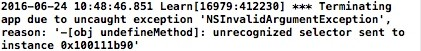
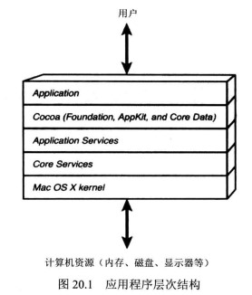

之前学习 Objective-C 时整理的笔记，文章内错误之处还望指点…
Hello World
|
|
#import 就相当于 C++ 里面的 #include
|
|
{...} 之间的语句会在被称之为 “自动释放池” 的语境中执行。
自动释放池的机制是：它使得应用在创建新对象时，系统能够有效的管理应用所使用的内容。
@"Hello, World" 此处的 @ 符号在位于一对双引号的字符串前面，这称为常量 NSString 对象。
如果前面没有 @ 字符，就是在编写常量 C 类型的字符串。有了这个符号就是在编写 NSString 字符串对象。
同 C 语言一样，Objective-C 的所有程序语句必须使用分号（;）结束。
这篇文章主要是讲 Objective-C 与 C++ 的区别…
类、对象和方法
消息传递
Objective-C的面向对象语法源自SmallTalk，消息传递（Message Passing）风格/在源码风格方面，这是它与C Family语言（包括C/C++、Java、世界上最好的语言PHP）差别最大的地方。
在Java、C++世界，我们调用一个对象的某个方法，在Objective-C里，这称作给类型发送一个消息，这可不仅仅是文字游戏，他们的技术细节也是不同。
在Java、C++里，对象和方法关系非常严格，一个方法必须属于一个类对象，否则编译要报错的。
而在Objective-C里，类型和消息的关系比较松散，消息处理到运行时（runtime）才会动态确定，给类型发送一个它无法处理的消息，也只会抛出一个异常而不会挂掉。
| Language | Call Method |
|---|---|
| Objective-C | [obj undefineMethod]; |
| C++ | obj.undefineMethod(); |
在代码里调用没定义的方法（这是Java、C++世界习惯的说法，专业叫法是，给obj对象传递它无法处理的消息），Xcode会警告，但能编译成功，运行的时候会出错。
它会输出这样一个错误：

函数调用
前文述及，不涉及面向对象时，它和C是完全一样的。以下是几个函数调用的示例：
不带参数
1StartedBlock();带参数
12NSLog(@"decrypted string: %@", str);CGRectMake(0, 0, 0, 0);
传递消息给类 / 实例方法
- 不带参数
| Language | Method |
|---|---|
| Objective-C | [obj method]; |
| C++ | obj.method(); |
- 带一个参数
| Language | Method |
|---|---|
| Objective-C | [counter increase:1]; |
| C++ | counter.increase(1); |
- 带多个参数
对于C Family 程序员来说，这是最难接收，最反人类的
| Language | Method |
|---|---|
| Objective-C | -(void) setColorToRed: (float)red Green: (float)green Blue: (float)blue {…} // 定义方法 |
| [myObj setColorToRed: 1.0 Green: 0.8 Blue: 0.2]; // 传递消息 | |
| C++ | public void setColorToRedGreenBlue(float red, float green, float blue) {…} |
| myObj.setColorToRedGreenBlue(1.0, 0.8, 0.2); |
- 消息嵌套
| Language | Method |
|---|---|
| Objective-C | UINavigationBar *bar = [ [ [UINavigationBar alloc] init] autorelease]; |
| C++ | UINavigationBar bar = UINavigationBar.alloc().inti().autorelease(); |
类的定义与实现
Objective-C中强烈要求将类的定义（interface）与实现（implementation）分为两个部分。
类的定义文件遵循C语言之习惯，头文件以.h为后缀，实现文件以.m为后缀（也有.mm的扩展名，表示Objective-C与C++混合编程）
举个栗子：
- Interface
定义部分，清楚定义了类的名称、数据成员和方法。以关键字@interface作为开始，@end作为结束。
|
|
方法前面的+/-号代表函数的类型：
加号（+）代表类方法（class method），不需要实例就可以调用，与C++的静态函数（static member function）相似。
减号（-）即是一般的实例方法（instance method）。
下面是意义相近的 C++ 语法对照：
|
|
Objective-C 定义一个新的方法时，名称内的冒号（:）代表参数传递，不同于C语言以数学函数的括号来传递参数。
Objective-C 方法使得参数可以夹于名称中间，不必全部依附于方法名称的尾端，可以提高程序可读性。
设定颜色RGB值得方法为例子：
这个方法的签名是setColorToRed:Green:Blue:。每个冒号后面都带着一个float类别的参数，分别代表红，绿，蓝三色。
- Implementation
实现区块则包含了公开方法的实现，以及定义私有变量及方法。以关键字@implementation作为区块起头，@end结尾。
|
|
值得一提的是不只Interface区块可定义实体变量，Implementation区块也可以定义实体变量，两者的差别在于访问权限的不同。
Interface区块内的实体变量默认权限为protected，宣告于implementation区块的实体变量则默认为private，故在Implementation区块定义私有成员更匹配面向对象之封装原则，因为如此类别之私有信息就不需曝露于公开interface（.h文件）中。
创建对象
Objective-C创建对象需通过alloc以及init两个消息。alloc的作用是分配内存，init则是初始化对象。 init与alloc都是定义在NSObject里的方法，父对象收到这两个信息并做出正确回应后，新对象才创建完毕。以下为范例：
在Objective-C 2.0里，若创建对象不需要参数，则可直接使用new
仅仅是语法上的精简，效果完全相同。
若要自己定义初始化的过程，可以重写init方法，来添加额外的工作。（用途类似C++ 的构造函数constructor）
数据类型和表达式
OC 有4个基本数据类型：int, float, double, char。概念同C++一样
5个限定词：long, long long, short, unsigned, signed。概念同 C++ 一样
下面来说几个特殊的类型：
- BOOL 类型
概念同 C++ 一样，但是预定义的真假值与 C++ 不同：
| Language | 真 | 假 |
|---|---|---|
| Objective-C | YES | NO |
| C++ | true | false |
- id 类型
id类型是 OC 里一个比较特殊的类型。
概念上与 void 类型很像，但是他们两个有很大区别。
在内部处理上，这种类型被定义为 指向对象的指针，实际上是一个 *指向这种对象的实例变量的指针
下面是 id 在 Objc.h 中的定义：
|
|
从上面看出，id是指向struct objc_object的一个指针。也就是说，id是指向任何一个继承了Object（或者NSObject）类的对象。
需要注意的是，id是一个指针，所以在使用的时候不需要加星号（*）。
SEL 类型
在 Objective-C 中，SEL 是选择器的一个类型。
我们可以将 SEL 理解为函数指针，但他们之间并非完全一样。nil 类型
与 C++ 中 null 概念一样，是是对 nill 操作不会有任何作用，C++ 中对 null 操作会异常。
基础数据类型表：
| 类型 | 实例 | NSLog 字符 |
|---|---|---|
| char | ‘a’、’\n’ | %c |
| short int | - | %hi、%hx、%ho |
| unsigned short int | - | %hu、%hx、%ho |
| int | 12、-97、0xFFE0、0177 | %i、%x、%o |
| unsigned int | 12u、100U、0XFFu | %u、%x、%o |
| long int | 12L、-200l、0xffffL | %li、%lx、%lo |
| unsigned long int | 12UL、100ul、0xffeeUL | %lu、%lx、%lo |
| long long int | 0xe5e5e5e5LL、0xffeeUL | %lli、%llx、%llo |
| unsigned long long int | 12ull、0xffeeULL | %llu、%llx、%llo |
| float | 12.34f、3.1e-5f、0x1.5p10、0x1P-1 | %f、%e、%g、%a |
| double | 12.34、3.1e-5、0x.1p3 | %f、%e、%g、%a |
| long double | 12.34L、3.1e-5l | %Lf、%Le、%Lg |
| id | nil | %p |
基本算术运算符概念同 C++ 一样
循环结构和选择结构
同C++11一样，for循环有两种：普通for循环，快速for循环
|
|
其他的 while，do…while，break，continue 都同 C++ 一致
选择结构，if，if…else…，switch同 C++ 一致
类
合成存取方法
|
|
从OC 2.0开始，可自动生成设值方法和取值方法。
第一步是在接口部分中使用@property指令标识属性。
第二步是在实现部分中使用@synthesize
如果使用了@property指令，就不需要再实现部分声明相应的实例变量。
当然，你并不需要使用@synthesize指令，使用@property指令编译器也会自动为你生成setter和getter。
但是要注意，如果你不使用@sythesize，那么编译器生成的实例变量会以下画线（_）字符作为其名称的第一个字符。
访问属性
访问属性有两种格式：Instance.property = value; 等价为 [Instance setProperty: value];
继承
|
|
在这段代码里面，ClassA继承于NSObject，ClassB继承于ClassA。
语法同C++差不多。但是有一点要注意：OC只能是单继承，而C++可以多继承。
继承的概念作用于整个继承链。
@class 指令
例如 @class XYPoint;
在头文件声明中，告诉编译器XYPoint是一个类的名字。而不需要 #import 导入整个 XYPoint.h
在C++中相当于 class XYPoint;
处理动态类型的方法：
| 方法 | 问题或行为 |
|---|---|
| -(BOOL) isKindOfClass: class-object | 对象是不是 class-object 或其子类的成员 |
| -(BOOL) isMemberOfClass: class-object | 对象是不是 class-object 的成员 |
| -(BOOL) respondsToSelector: Selector | 对象是否能够相应 selector 所指定的方法 |
| -(BOOL) instancesRespondToSelector: Selector | 指定的类实例是否能够响应 selector |
| -(BOOL) isSubclassOfClass: class-object | 对象是否是指定类的子类 |
| -(id) performSelector: selector | 应用 selector 指定的方法 |
| -(id) performSelector: selector withObject: object | 应用 selector 指定的方法，传递参数 object |
| -(id) performSelector: selector withObject: object1 withObject: object2 | 应用 selector 指定的方法，传递参数 object1 和 object2 |
多态
在OC里面的多态与C++有些不一样。
在OC里面，不同类的相同方法名即为多态。
而在C++里面就不一样咯。C++里面的多态是通过继承来实现的。
举个最简单的例子：
- Objective-C
|
|
- C++
|
|
C++ 输出的结果是100
而OC输出的结果是200，OC是真的覆盖…
另外，OC不支持运算符重载…
异常处理
@try、@catch、@throw、@finally这些概念同C一样。
分类和协议
分类
在Objective-C的设计中，一个主要的考虑即为大型代码框架的维护。
结构化编程的经验显示，改进代码的一种主要方法即为将其分解为更小的片段。
Objective-C借用并扩展了Smalltalk实现中的“分类”概念，用以帮助达到分解代码的目的。
分类中的方法是在运行时被加入类中的，这一特性允许程序员向现存的类中增加方法，而无需持有原有的代码，或是重新编译原有的类。
在运行时，分类中的方法与类原有的方法并无区别，其代码可以访问包括私有类成员变量在内的所有成员变量。
若分类声明了与类中原有方法同名的函数，则分类中的方法会被调用。因此分类不仅可以增加类的方法，也可以代替原有的方法。
这个特性可以用于修正原有代码中的错误，更可以从根本上改变程序中原有类的行为。
若两个分类中的方法同名，则被调用的方法是不可预测的。
举个例子：
类的扩展
有一种特殊的情况是创建一个未命名的分类，且在括号“（）”之间不指定名字。这种特殊的语法定义称为类的扩展。
定义一个像这样命名的分类时，可以通过定义额外的实例变量和属性来扩展类，这在有命名的分类中是不允许的。
未命名分类中声明的方法需要在主实现区域实现，而不是在分离的实现区域中实现。
未命名的分类是非常有用的，因为他们的方法都是私有的。如果需要写一个类，而且数据和方法仅供这个类本身使用，未命名分类比较合适。
通过使用分类添加新方法来扩展类不仅会影响这个类，同时也会影响他的所有子类。
协议
协议是一组没有实现的方法列表，任何的类均可采纳协议并具体实现这组方法。
协议列出了一组方法，有些可以是选择实现，有些是必须实现。
定义一个协议很简单：只要使用@protocol指令，后面跟上你给出的协议名称。然后和处理接口部分一样，声明一些方法。
@end指令之前的所有方法声明都是协议的一部分。在@optional指令之后列出的所有方法都是可选的。
个人感觉类似于C++的虚基类…
举个栗子：
加了@optional关键字，一个类在implements这个协议时，便可以不实现print:方法。
|
|
一个类实现某些协议是写在Interface定义里面的。语法为：协议名用尖括号包裹，多个协议名用逗号隔开，协议写在父类的右边（如果没有父类就直接写在子类右边）。
可以使用conformsToProtocol:方法检查一个对象是否遵循某项协议。
|
|
这里使用的专用@protocol指令用于获取一个协议名称，并产生一个protocol对象，conformsToProtocol: 方法期望这个对象作为它的参数。
为了测试一个对象是否实现了可选的print方法，可以编写下列代码：
|
|
通过在类型名称之后的尖括号中添加协议名称，借助编译器来检查变量的一致性：id <Drawable> currentObject;
块
概念上，匿名函数，lambda，closure（或OC中的blocks）是一个东西。
详见：浅析匿名函数、lambda表达式、闭包（closure）区别与作用
块是以插入字符 ^ 开头为标识的。后面跟的一个括号表示块所需要的参数列表。
同样，也可以将这个块赋给一个变量。
举个栗子：
|
|
如果要试图在块内部改变变量的值，需要在定义本地变量之前插入 __block 修改器。
数字、字符串和集合
在Foundation框架包括大量的类、方法和函数。可以通过这条代码来导入：#import <Foundation/Foundation.h>
里面的东西就相当于C++的标准库似的。使用的时候看看文档就好了。
数字对象
NSNumber类包含多个方法，可以使用初始值创建NSNumber对象。
NSNumber 的创建方法和检索方法：
| 创建和初始化方法 | 初始化实例方法 | 检索实例方法 |
|---|---|---|
| numberWithChar; | initWithChar; | charValue |
| numberWithUnsignedChar; | initWithUnsignedChar; | unsignedCharValue |
| numberWithShort; | initWithShort; | shortValue |
| numberWithUnsignedShort; | initWithUnsignedShort; | unsignedShortValue |
| numberWithInteger; | initWithInteger; | integerValue |
| numberWithUnsignedInteger; | initWithUnsignedInteger; | unsignedIntegerValue |
| numberWithInt; | initWithInt; | intValue |
| numberWithUnsignedInt; | initWithUnsignedInt; | unsignedIntValue |
| numberWithLong; | initWithLong; | longValue |
| numberWithUnsignedLong; | initWithUnsignedLong; | unsignedLongValue |
| numberWithLongLong; | initWithLongLong; | longLongValue |
| numberWithUnsignedLongLong; | initWithUnsignedLongLong; | unsignedLongLongValue |
| numberWithFloat; | initWithFloat; | floatValue |
| numberWithDouble; | initWithDouble; | doubleValue |
| numberWithBool; | initWithBool; | boolValue |
OC是允许通过@表达式创建数字对象的。
举栗子：
|
|
字符串对象
@”Hello World!” 就是一个字符串对象。即NSString类的对象。
特殊情况下，它属于NSConstantString类的常量字符串对象。NSConstantString类是字符串对象NSString类的子类
description 方法
可以使用格式化字符%@显示数组、字典和集合的全部内容。
事实上，通过覆盖集成的description方法，还可以使用这些格式字符显示你自己的类对象。
如果不覆盖方法，NSLog仅仅显示类名和该对象在内存中的地址，这是从NSObject类继承的description方法的默认实现。
举个栗子：
|
|
结果：2016-06-28 16:26:08.873 Learn[18105:485920] 1/2
可变对象与不可变对象
@”Hello World!”
创建字符串对象时，会创建一个内容不可更改的对象，称为不可变对象，可以使用NSString类处理不可变字符串。
若要需要经常处理字符串并更改字符串中的字符，可以使用NSMutableString类处理
数组对象
可变数组：NSArray
不可变数组：NSMutableArray
挺简单的…使用的时候看看文档就行了..
这里就说一下排序：
利用NSArray数组排序的方法很容易实现。这里以NSMutableArray为例子：
在NSMutableArray类中sortUsingSelegtor: 的方法很容易实现。
举个栗子:
|
|
sortUsingSelector: 方法会使用selector比较两个元素。
由于数组可以包含任何类型的对象，所以要实现一般的排序方法，唯一途径就是由你来判断数组中的元素是否有序，为此，你必须添加一个方法比较数组中的两个元素。
这个方法返回的结果是NSComparisonResult类型的值。
如果希望排序方法将第一个元素放在第二个元素之前，那么方法的返回值应是NSOrderedAscending。
如果认为这两个元素相等，那么返回NSOrderedSame。
如果排序后的数组中，第一个元素应该在第二个元素之后，那么返回NSOrderedDescending。
也阔以使用块排序：
SortUsingComparator: (NSComparator) block;
NSComparator 作为typedef定义在系统头文件中：
Typedef NSComparisonResult (^NSComparator) (id obje1, id obj2);
NSComparator 是一个区块，使用两个对象作为参数，并返回NSComparisonResult类型的值。
|
|
NSValue 类
像数组这样的Foundation集合只能存储对象，而有些类型是源于C语言的一种数据类型，比如结构，它不是对象。
我们可以利用 NSValue 把结构包装（wrapping）成对象。逆向的处理是从对象中解出基本类型，简称展开（unwrapping）。
NSValue 包装和展开方法
| Typedef 数据类型 | 描述 | 包装方法 | 展开方法 |
|---|---|---|---|
| CGPoint | x 和 y 值组成的点 | valueWithPoint; | pointValue |
| CGSize | 宽和高组成的尺寸 | valueWithSize; | sizeValue |
| CGRect | 矩形包含原点和尺寸 | valueWithRect; | rectValue |
| NSRange | 描述位置和大小的范围 | valueWithRange; | rangeValue |
词典对象
词典是由键-对象对儿组成的数据集合。概念和C++里面的std::map一样。
词典中的键必须是单值的，通常他们是字符串，但也可以是其他对象类型，和键关联的值可以使任何对象类型，但不能是nil。
不可变字典：NSDictionary
可变字典：NSMutableDictionary
[NSMutableDictionary dictionary]; 创建一个空字典
其他也挺简单的，使用上也和map差不多。看看文档就好了~
集合对象
set是一组单值对象集合，它可以是可变的，也可以是不可变的。
操作包括：搜索、添加、删除集合中的成员（仅可变集合），比较两个集合，计算两个集合的交集和并集等。
也是和C++里面的std::set差不多
Foundation框架同样提供了一个名为NSCountedSet的类，这种集合同一对象可以出现多次，
然而并非在集合众存在多次这个对象，而是维护一个计数值。
使用文件
管理文件和目录：NSFileManager
|
|
使用 NSData 类
使用文件时，需要频繁的将数据读入到一个缓冲区，Foundation的NSData类提供了一种简单的方式，它用来设置缓冲区，将文件的内容读入缓冲区，或将缓冲区的内容写到一个文件。
据说，据说哈，32位应用的NSData缓冲区最多可存储2G的数据。64位的最多可存储8EB的数据…
举例子：
|
|
枚举目录中的内容
|
|
这两种枚举技术的不同在于：
enumeratorAtPath: 方法列出了目录中的内容，包含子目录
contentsOfDirectoryAtPath:error: 方法不会列出子目录内容
使用路径：NSPathUtilities.h
|
|
Foundation框架的NSSearchPathForDirectoriesInDomains 函数，用于获取系统的特殊目录，如 Application 和 Documents 目录。
|
|
例子就是获取一个Documents目录。
函数的第二个参数可以是多个值，用于指定需要列出的目录，如用户的，系统的或者所有目录。
最后一个参数用于指定是否展开路径中的~字符
NSSearchPathForDirectoriesInDomains返回一组路径的数组，如果仅是查找用户的目录，这个数组只包含一个元素，
如果第二个参数指定多个值，该数组会包含多个元素。
当为Ios编写程序时，NSSearchPathForDirectoriesInDomains函数第二个参数应是NSUserDoMainMask,
并希望得到一个包含单个路径的数组作为返回。
常用的 iOS 目录
| 目录 | 用途 |
|---|---|
| Documents (NSDocumentDirectory) | 用于写入应用相关数据文件的目录。在 iOS 中写入这里的文件能够与 iTunes 共享并访问，存储在这里的文件会自动备份到 iCloud |
| Library/Caches (NSCachesDirectory) | 用于写入应用支持文件的目录，保存应用程序再次启动需要的信息。iTunes 不会对这个目录的内容进行备份 |
| tmp (use NSTemporaryDirectory()) | 这个目录用于存放临时文件，在程序终止时需要移除这些文件。当应用程序不再需要这些临时文件时，应该将其从这个目录删除 |
| Library/Preferences | 这个目录包含应用程序的偏好设置文件。使用 NSUserDefaults 类进行偏好设置文件的创建、读取和修改 |
使用 NSProcessInfo 类
NSProcessInfo 类方法
| 方法 | 描述 |
|---|---|
| +(NSProcessInfo *) processInfo | 返回当前进程信息 |
| -(NSArray *) arguments | 以 NSString 对象数组的形式返回当前进程参数 |
| -(NSDictionary *) environment | 返回变量/值对字典，以描述当前的环境变量，比如 PATH 和 HOME 及其值 |
| -(int) processIdentifier | 返回进程标识符，它是操作系统赋予进程的唯一数字，用于标识每个正在运行的进程 |
| -(NSString *) processName | 返回当前正在执行的进程名称 |
| -(NSString *) globallyUniqueString | 每次调用这个方法时，都返回不同的单值字符串，可以用这个字符串生成单值临时文件名 |
| -(NSString *) hostname | 返回主机系统名称 |
| -(NSUInteger) operationsSystem | 返回表示操作系统的数字 |
| -(NSString *) operationsSystemName | 返回操作系统名称 |
| -(NSString *) operationsSystemVersionString | 返回操作系统的当前版本 |
| -(void) setProcessName: (NSString *) name | 将当前进程名称设置为 name，应该谨慎的使用这个方法，因为关于进程名称存在一些假设，比如用户默认设置 |
深拷贝，实现 协议
如果我们要实现深拷贝，就要根据
实现
如果要想区分可变不可变副本，还要根据
产生对象的可变副本并不要求被复制的对象本身也是可变的（反之亦然）。
举例子：
|
|
Cocoa 和 Cocoa Touch 简介
Cocoa 是一种为Mac OS X应用程序提供了丰富用户体验的框架，实际上由3个框架组成：
Foundation框架、便于使用数据库存储和管理数据的Core Data框架，以及Application Kit (AppKit)框架。
AppKit 框架提供了与窗口、按钮、列表等相关的类。
框架层

内核以设备驱动程序的形式提供与硬件的底层通信。
它负责管理系统资源，包括调度需要执行的程序、管理内存和电源，以及执行基本的I/O操作。
核心服务提供的支持比它上面层次更加底层或更加“核心”。
例如提供对集合、网络、调试、文件管理、文件夹、内存管理、线程、时间和电源的管理。
应用层包含打印和图形渲染的支持，包括Quartz、OpenGL、和 Quicktime。
Cocoa层位于应用程序层之下。Cocoa包括Foundation、Core Data 和 AppKit框架。
Foundation框架提供处理集合、字符串、内存管理、文件系统、存档等相关的类。
AppKit框架提供管理视图、窗口、文档和多用户界面相关的类。
Cocoa Touch
Cocoa框架应用于Mac OS X桌面与笔记本电脑应用程序的开发，而Cocoa Touch框架应用于iOS设备上应用程序的开发。
Cocoa 和 Cocoa Touch 都有 Foundation 和 Core Data 框架。然而在Cocoa Touch下，UIKit代替了AppKit框架。
提供了很多相同类型对象的自持。比如窗口、视图、按钮、文本域等。
另外Cocoa Touch 还提供使用陀螺仪和加速器的类和触摸式界面。去掉了不需要的类。
引用参考
《Objective-C程序设计，第六版》
《Objective-C维基百科》
《iOS开发60分钟入门》